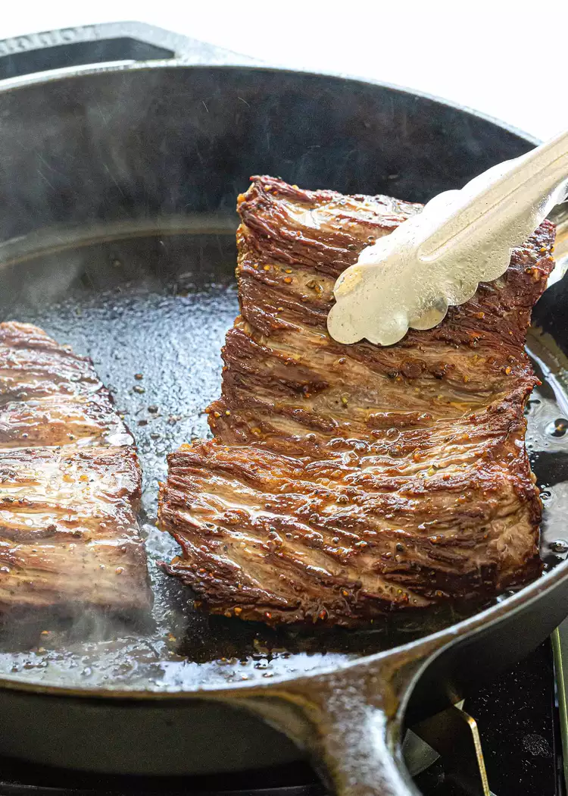

How To Cook Skirt Steak

Description:
Often times a hunky piece of ribeye or filet catches your attention at the market. However, there are other options for tender, flavorful, and more affordable cuts that are often overlooked. The next time a beef craving creeps up, try something new and exciting and grab the unsung skirt steak.
Ingredients
- 1 pound outside skirt steak
- 1 teaspoon kosher salt, or as needed
- 1/2 teaspoon ground black pepper, or as needed
- 2 tablespoons olive oil
Steps
- Cut the steak:If the skirt steak comes in a long strip, cut into 2 or 3 smaller pieces, 5 to 7 inches in length. This will allow them to fit better in the pan and make them easier to slice later.
- Dry and season the steak: Thoroughly pat steaks dry with paper towels on each side. The surface should be very dry to help brown the surface of the meat. Generously season each side of the steaks with salt and pepper.
- Heat the pan: Heat a large 12-inch cast iron skillet over high heat for 3 minutes. Once hot, add the olive oil.
- Cook the steak: Use tongs to carefully add the steak to the pan, then press down firmly on the surface a few times for more contact. Sear the first side until browned, about 2 to 4 minutes, depending on the thickness of the meat. Flip and cook another 2 to 4 minutes. For medium rare doneness, cook steak until it reaches an internal temperature of 130°F. Work in 2 batches if needed.
- Rest the steak: Transfer steak to a cutting board, loosely cover with foil, and allow to rest for 10 minutes before slicing.
- Slice and serve the steak: Hold the carving knife at a 45-degree angle, and then slice the steak across the grain, about 1/4-inch thick slices. Transfer skirt steak to a serving plate.